Коротко. Курс дав затверджений Sprint Backlog і Status Snapshot на кінець другого спринту. Ми перенесли план у Jira, налаштували workflow із WIP-лімітами, фільтри й дашборд, а потім за ними розібрали знімок: де проєкт відхиляється і що робить PM.
- Перенесли 18 задач на 865 год у спринти S1–S6 з 15 залежностями; WIP-ліміти: In Progress 3, Blocked 1, Testing 2.
- Зібрали дашборд «NutriScan · Control» на 9 фільтрах: блокери, WIP за ролями, завантаження, план/факт.
- Проєкт відстає за строками: SPI 0,43 за правилом 0/100 і 0,81 за 50/50. Вузькі місця OCR/ML і Mobile стоять на критичному шляху.
Що треба було здати. Дедлайн 21.10.
- Дошка з workflow, WIP-лімітами, swimlanes і задачами (оцінки + власники) — посилання або скриншот як доказ.
- Control views: фільтри / дашборд — blocked, завантаження за людьми, план/факт.
- Аналіз Status Snapshot: таблиця «сигнал → доказ → рішення».
- Короткий висновок: де проєкт відхиляється і що робить PM.
- Опційно: control-дашборд для стейкхолдера на 3–4 сигнали.
Дошка Jira
Задачі T1–T18 перенесено з Артефакту 01 без змін: 865 год, спринти S1–S6, 15 залежностей. Проєкт Second team nutriScan (SCRUM), team-managed, Scrum. Знімки нижче показують стан на кінець S2 за Status Snapshot.

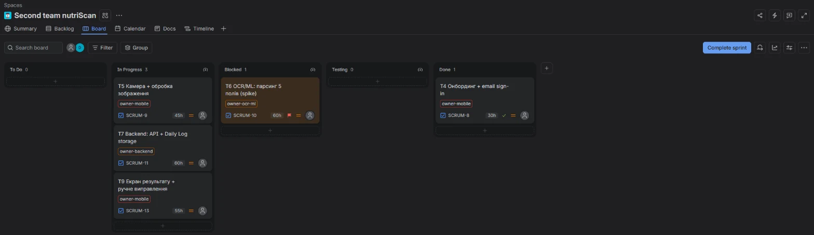

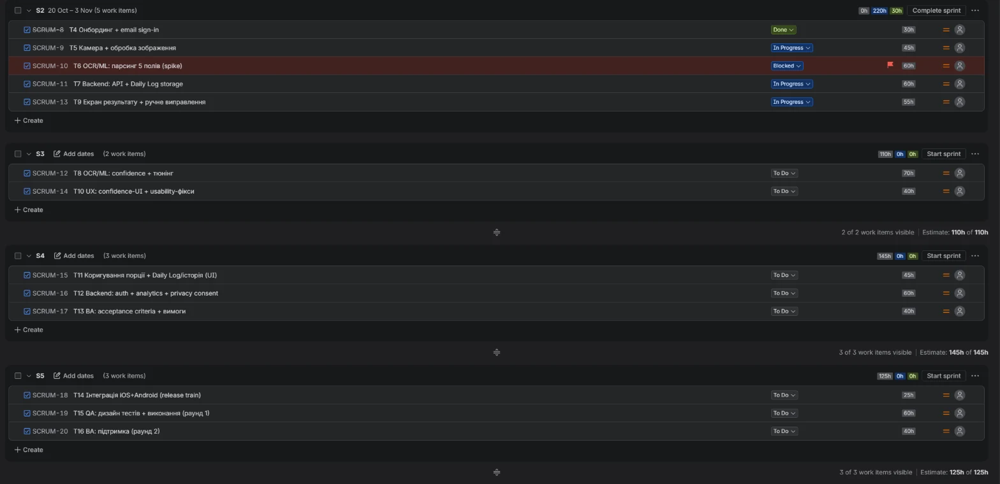
Workflow і WIP-ліміти
Колонки: To Do → In Progress → Blocked → Testing → Done. Blocked належить до категорії In Progress, тому враховується у WIP.
| Колонка | WIP | Чому саме такий ліміт |
|---|---|---|
| To Do | — | Обсяг задає склад спринту |
| In Progress | 3 | У кожному спринті плану паралельно працюють щонайбільше 3 ролі (у S2: Mobile, OCR/ML, Backend) за правилом «одна задача на людину». Перевищення означає зайвий WIP: задачу взяли понад план або достроково |
| Blocked | 1 | Блокування — сигнал до ескалації, а не черга; друге блокування вже означає системну проблему. Таймзони PST/UTC/GMT додають добу до кожної відповіді |
| Testing | 2 | Не накопичувати неперевірене: коли колонка заповнена, спершу доводять розпочате, нове не беруть |
| Done | — | — |
- У Mobile і OCR/ML у роботі не більше 1 задачі: Mobile-розробник один, а OCR/ML, зайнятий на 50%, із другою задачею подовжує критичний шлях T6 → T8 → T9. Це контролює фільтр F3.
- Власника задачі позначає мітка ролі owner-*, бо в Jira один користувач.
- Swimlanes не налаштовано: у team-managed проєкті рядки групуються лише за виконавцем або епіком, а ролі зберігаються мітками. Розріз за ролями дає гаджет Flow + WIP.
Control views
Дашборд «NutriScan · Control» і 9 збережених фільтрів показують PM flow, блокери, WIP-перевантаження, завантаження за ролями та план/факт. Усі скриншоти показують стан на кінець S2.
Блокери і WIP

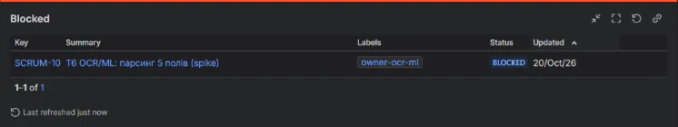

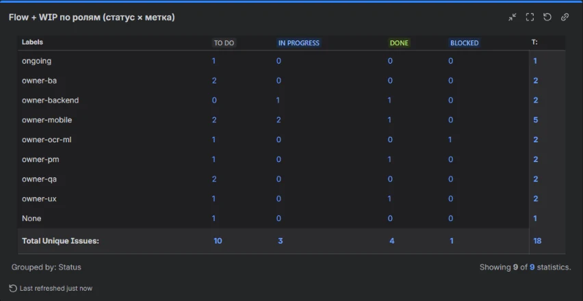

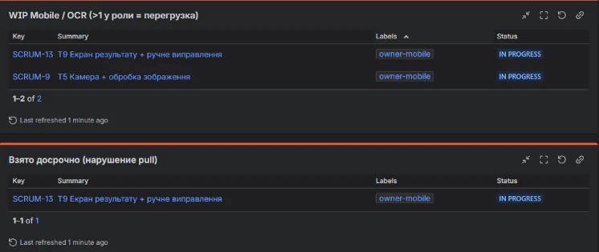
Завантаження за ролями

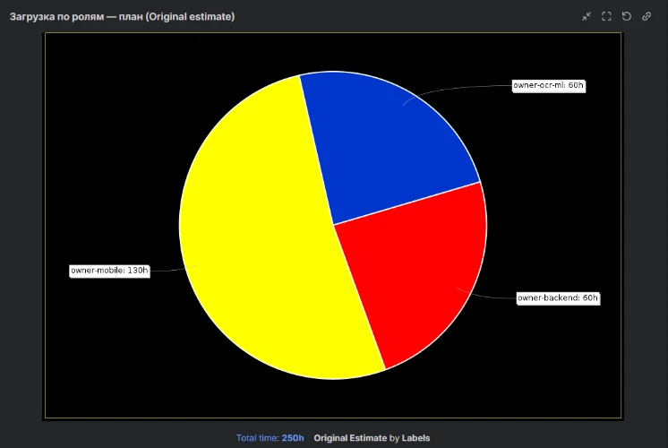

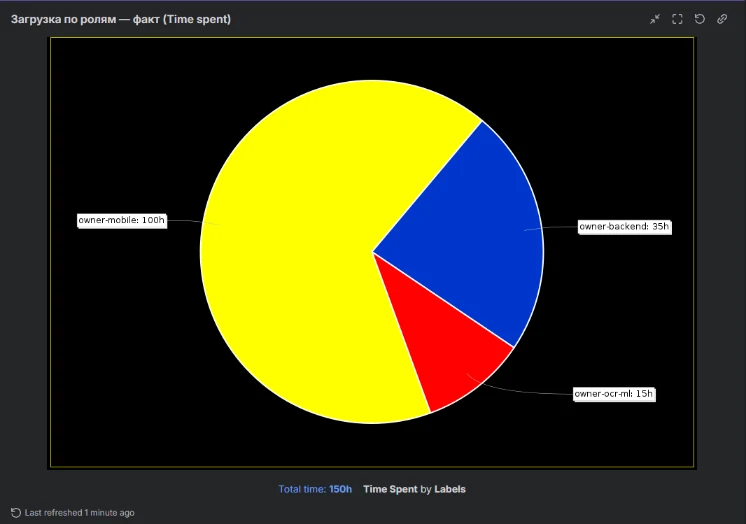
План/факт за задачами

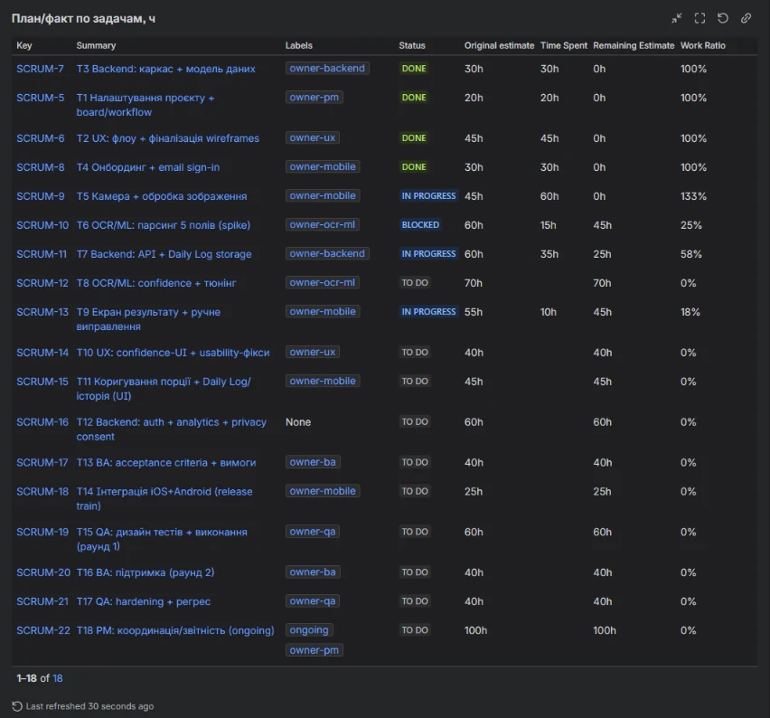

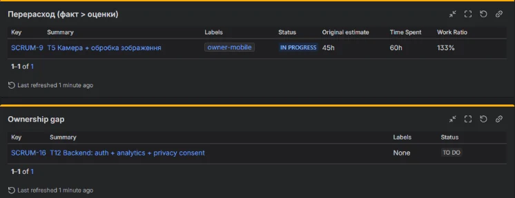
Спринт S2

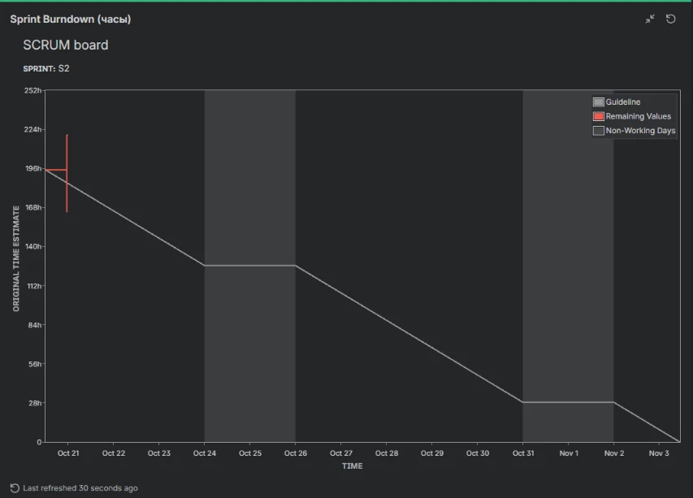

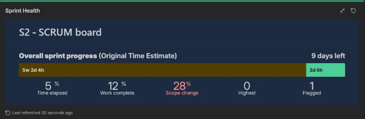
Обмеження Jira: гаджети не порівнюють години з capacity, тому це порівняння наведено в підписах вище; правило «1 задача на роль» перевіряє лише фільтр F3. Завантаження показано за ролями, а не за людьми: у Jira один користувач.
Аналіз Status Snapshot
План/факт (EVM у годинах)
| Правило обліку EV | EV, год | SV, год | SPI | CV, год | CPI |
|---|---|---|---|---|---|
| 0/100 — задача зараховується лише в Done (основне) | 125 | −165 | 0,43 | −120 | 0,51 |
| 50/50 — розпочата задача зараховується на 50% оцінки | 235 | −55 | 0,81 | −10 | 0,96 |
0/100 зараховує задачу лише в Done; 50/50 зараховує розпочату задачу на половину оцінки, а закриту повністю. Для песимістичної оцінки беремо 0/100: відсоток готовності розпочатих задач ненадійний (у T5 залишок 0 год при відкритій задачі), а 50/50 зараховує роботу, якої може й не бути. Відставання за строками видно за обох правил (SPI нижче 1). Перевитрата за витратами залежить від правила, доведена лише одна: T5, +15 год.
Сигнал → доказ → рішення
Вісім сигналів зі знімка, для кожного доказ, рішення PM та обґрунтування.
| Сигнал | Доказ | Рішення | Обґрунтування |
|---|---|---|---|
| Bottleneck — вузьке місце OCR/ML | T6 OCR/ML parsing заблокована; T8 залежить від T6. OCR/ML Engineer доступний на 50% і є спільним ресурсом. | Unblock + escalate: узгодити доступ до OCR API та набору етикеток, визначити відповідального за доступ і термін вирішення. Запросити OCR/ML на 100% у S2–S3 і розбити T6 та T8 на частини по 40 год і менше (оцінки частин дають виконавці); Mobile працює на заглушці OCR із зафіксованим контрактом відповіді. Якщо 100% не дають — варіанти нижче. | Без доступу до OCR API та етикеток T6 не може нормально продовжуватися, а T8 залежить від її результату. Обмежена доступність інженера додатково зменшує можливість швидко надолужити затримку. На S2–S3 в OCR/ML 130 год роботи (T6 60 + T8 70) при capacity 80 год за два спринти. |
| WIP overload — перевантаження Mobile | У Snapshot зазначено WIP-ліміт колонки In Progress = 2, але Mobile-розробник одночасно веде T5, T9 і фікс. | Rebalance: погодити пріоритети й послідовність роботи, обмежити паралельне виконання задач. | Навіть за 100% доступності один Mobile-розробник не може повноцінно просувати всі задачі одночасно без ризику перемикання контексту та затримок. |
| Blocked work — заблокована T6 | T6 має статус Blocked; причина — очікування доступу до OCR API та набору етикеток. У команді різні часові пояси: PST/UTC/GMT. | Unblock + escalate: організувати підтвердження доступу, визначити контактну особу та погодити час відповіді з урахуванням часових поясів. | Блокер залежить від зовнішнього підтвердження. Чіткий власник і конкретний термін зменшать затримки через різницю в робочому часі. |
| Ownership gap — T12 | T12 Backend privacy consent: власника не призначено. | Assign owner: призначити відповідального з Backend-команди. | Без конкретного власника немає людини, яка відповідає за просування задачі, її статус і своєчасне завершення. |
| Plan/fact deviation — T5 | T5 Camera + image processing: оцінка 45 год, факт 60 год; примітка «перевитрата». Перевищення становить 15 год, або приблизно 33,3% від оцінки. | Forecast + re-sequence: з'ясувати причину перевитрати, уточнити залишок роботи та перевірити вплив на T9 і наступні задачі. | Перевищення оцінки може відсунути залежні роботи. PM потрібно переглянути прогноз, а не просто продовжувати виконання за початковим планом |
| T9 розпочато достроково | T9 Results + manual correction належить до Sprint 3, але вже перебуває в роботі у Snapshot наприкінці Sprint 2. Оцінка — 55 год, факт — 10 год. | Re-sequence: з'ясувати причину раннього старту та узгодити, чи варто продовжувати T9 зараз, чи пріоритетніше завершити поточну роботу. | Достроковий старт може бути виправданим, але його потрібно узгодити з пріоритетами Sprint 2 і залежностями T9 від T5 та T8. |
| Логіка базового плану | T9 в одному спринті з T8 (70 год при capacity 40 год), тому в S3 нездійсненна. T13 (критерії приймання) — у S4, після розробки T4–T10. T6 і T8 більші за спринт | T13 перенести в S2–S3: BA вільний, а критерії потрібні до розробки й тестів. T9 планувати після першої частини T8 | План перевищує доступну capacity спринту: 70 годин роботи не вміщаються у 40 годин. Це створює ризик незавершення задач у межах спринту. Перенесення T13 раніше дасть змогу підготувати критерії приймання до завершення розробки, а послідовне планування T8 і T9 зменшить залежність від ще не готових OCR/ML-результатів і ризик переробок |
| Data inconsistency | У блоці Plan/Fact T5 позначена «done з перевитратою», а на дошці T5 — In Progress (45/60 год). Рядок «T1–T7 завершені (≈290 год)» — це план S1+S2, а не факт: за фактом закриті лише T1–T4. | Уточнити фактичний статус T5 за Definition of Done; оновити звіт, щоб статуси у звіті й на дошці збігалися. | Різні статуси однієї задачі створюють недостовірну картину прогресу. Якщо задачі ще In Progress, не можна звітувати про її завершення. PM має перевірити фактичний стан і критерії Definition of Done. Це дасть команді й стейкхолдерам єдину достовірну інформацію для рішень. |
Якщо OCR/ML на 100% не дають
Рішення ухвалюють спонсор і Product Owner на контрольній точці наприкінці S3: чи закрита T6.
| А. Увесь функціонал на заглушці | Б. Скорочення обсягу OCR-аналізу | |
|---|---|---|
| Що робимо | Mobile робить T9 → T11 → T14 на заглушці із зафіксованим контрактом відповіді OCR. Реальний парсинг підключаємо після T8 | Product Owner скорочує обсяг: менше полів у MVP або менше тюнінгу в T8. Mobile однаково працює на заглушці до готовності OCR |
| Строки OCR | Залишок 115 год при 40 год за спринт: T6 закрита на початку S4, T8 — до кінця S5. Підключення й перевірка реального OCR — S5–S6 | Обсяг скорочується до того, що OCR/ML встигає закрити раніше S5; наскільки — за підсумками spike T6 |
| Плюси | Увесь функціонал (5 полів, confidence) зберігається; Mobile не простоює; 6 спринтів теоретично витримуємо | Є запас на тюнінг і регрес; якість OCR відома раніше |
| Мінуси | Запасу немає: кожен новий день блокування T6 зсуває парсинг за S6. Якість OCR видно лише в S5–S6. Ризик переробки T9 і T10. Підключення реального OCR — нова задача, оцінку дає команда | Цінність MVP нижча; потрібне рішення Product Owner щодо складу функціоналу |
| Коли обирати | T6 закрита до кінця S3, блокувань більше немає | T6 до кінця S3 не закрита або spike показав низьку точність |
Висновок PM
Проєкт відстає від базового плану за строками: SPI 0,43 за песимістичної оцінки (0/100) і 0,81 за 50/50. CPI 0,51–0,96; доведена перевитрата одна: T5, +15 год. Вузькі місця OCR/ML і Mobile стоять на критичному шляху, і за поточного темпу 6 спринтів не витримуємо.
| Де | Факт | Причина |
|---|---|---|
| OCR/ML | T6 заблокована, 15 з 60 год. Залишилося 115 год при capacity 40 год за спринт | Немає доступу до OCR API та набору етикеток; ресурс на 50%; затримки через таймзони |
| Mobile | У S2 заплановано 130 год при capacity 80; T5 +15 год (+33%) | T9 взято достроково, робота над кількома задачами паралельно |
| План спринту | Закрито 125 з 290 год; T7 не закрита, хоча позначена «за планом» | Наслідки двох пунктів вище; статус у звіті розходиться з дошкою |
| Ownership | У T12 (privacy consent) немає власника | Прогалина в призначенні, compliance-ризик до S4 |
Що робить PM
| Дія | Тип | Строк |
|---|---|---|
| Запитуємо OCR/ML на 100% у S2–S3; T6 і T8 ділимо на частини по 40 год і менше | Escalate | До планування S3 |
| Самі запитуємо доступ до OCR API; немає відповіді 24 год — ескалюємо спонсору. Спільне вікно дзвінка в таймзонах. Збір набору етикеток — BA | Unblock | 24 год |
| T9 повертаємо в To Do, Mobile доводить T5; у Mobile в роботі не більше 1 задачі | Rebalance / re-sequence | Одразу |
| Mobile продовжує T9 на заглушці OCR із зафіксованим контрактом відповіді | Re-sequence | Після T5 |
| Переоцінюємо залишок T5, закладаємо буфер на Mobile-ланцюжок | Буфер | Планування S3 |
| Залишки T6 і T7 — у S3, T13 — у S2–S3 | Re-sequence | Планування S3 |
| Призначаємо власником T12 Backend | Rebalance | Одразу |
| Оновлюємо прогноз і повідомляємо стейкхолдерів; єдине джерело статусу — дошка | Комунікація | Найближчий статус-звіт |
Що контролюємо далі
| Показник | Де дивимося | Поріг для дії |
|---|---|---|
| Блокери | Гаджет Blocked, прапорець Flagged | Блокер старший за 24 год — ескалація |
| WIP за ролями | WIP Mobile / OCR | Більше 1 задачі в ролі |
| Навантаження | Завантаження — план і факт | Більше 100% capacity ролі в спринті |
| План/факт | SPI і CPI за 0/100, перевитрата | SPI або CPI нижче 0,8; Work Ratio понад 100% |
| T6 до кінця S3 | Статус T6 | Не закрита — вибір варіанта А або Б |
Припущення
- Capacity 80 год на людину за 2-тижневий спринт, OCR/ML — 40 год.
- AC у годинах — проксі витрат: вартості в артефактах немає.
- EV основне за правилом 0/100, для порівняння — 50/50.
- Пороги 24 год і 0,8 — пропозиція PM, а не дані артефактів.